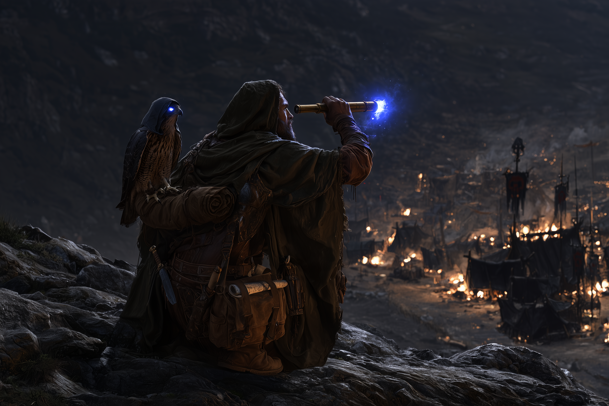
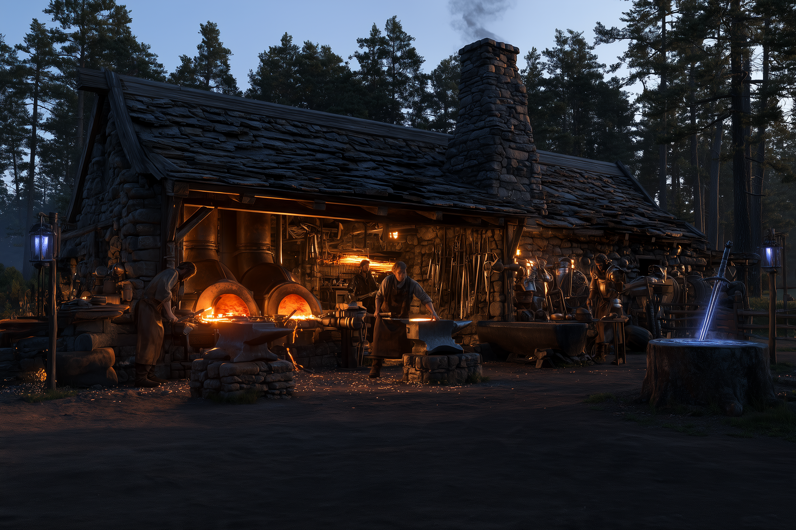

Les fondations sont posées.
- Univers et grandes lignes du jeu
- Choix et audit du moteur
- Premières illustrations validées
Trois mille ans après la Rupture, la vie reprend sur les Éclats. Élevez votre cité, incarnez votre héros et avancez ensemble face à ce qui rôde au-delà des murs.
Liste d’intérêt et newsletter · Jeu en développement
Bâtissez.
Des ressources, des choix, un royaume.Incarnez.
Un héros à la tête de votre royaume.Explorez.
Le PvE et la coopération au premier plan.Cinq premiers regards sur une même ambition. Les étapes suivantes gardent leurs secrets. Choisissez un palier pour en découvrir l’atmosphère.

Quelques toits, des chemins et un Obélisque. Un lieu où prendre racine dans un monde qui se relève.
Illustrations de développement. Les paliers VI à X sont représentés par des silhouettes génériques, sans leurs images réelles.

Les Straumar parcourent la terre comme des veines de mana. Une perturbation les traverse ; les hordes d’orcs et de gobelins s’éveillent à nouveau.
Préparez vos troupes. Explorez les Éclats. Votre cité est un refuge, mais l’aventure commence à ses portes.
Entrer dans la maquette du jeu →
À la tête de votre royaume, votre héros incarne votre aventure. Ses talents et son équipement accompagnent votre progression.
Le projet s’enrichit aussi de métiers et de commerce entre joueurs. Cet axe est en conception : ses détails et son calendrier restent à préciser.
Des jalons, pas de dates pour l’instant. Nous annonçons une date lorsque nous pouvons nous y engager.
Préinscrivez votre intérêt pour le projet. Vous recevrez les grandes avancées et les annonces des prochaines étapes.